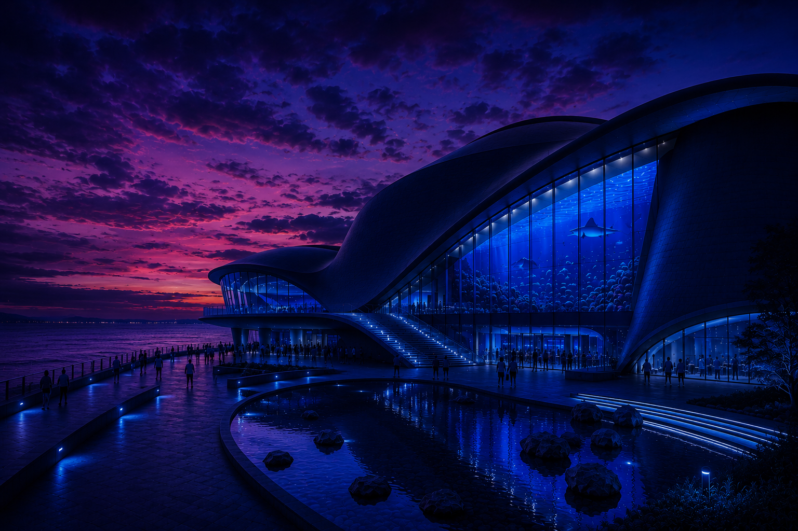
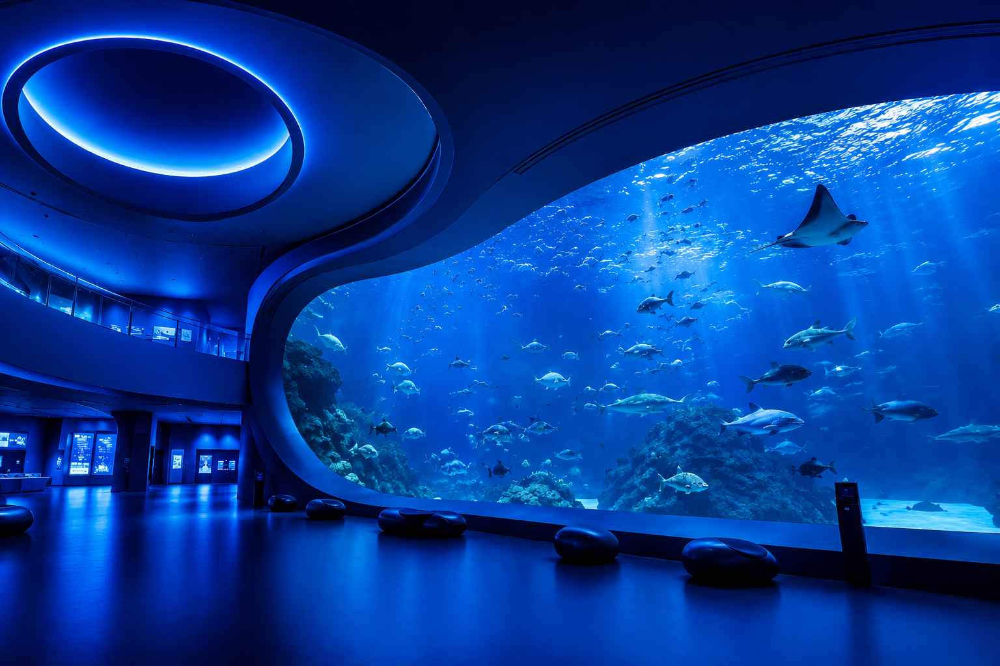
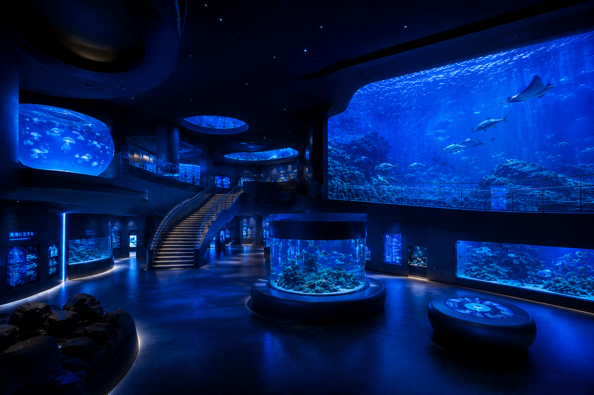
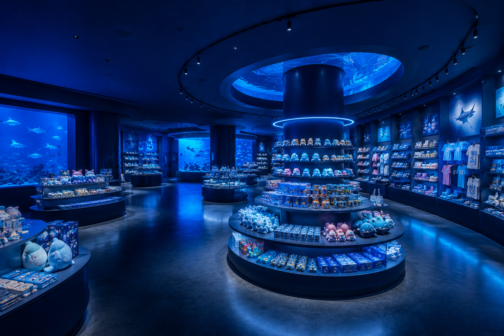

ARガイド
全館対応の拡張現実ナビ。生物名・生態情報をスマホでオーバーレイ表示。
AQUA LUMINA
海の都市へ、降下中
LOADING 0%
NEXT-GEN AQUARIUM · EST. 2022
延床 8.5万㎡・11の展示エリア・680種以上。
ARナビとライブデータが導く、次世代型の海洋施設。

高さ約35mのオーシャンホール大水槽をはじめ、全11エリアが館内に続きます。
アクア・ルミナは、架空の港湾都市ルミナベイに建設された次世代型水族館。 研究・教育・観光を一体化した「海洋イノベーション・キャンパス」として、 2022年にグランドオープンしました。
全館にARウェイファインディングを配備。各水槽の水温・塩分濃度・ 生態データをリアルタイム表示し、来館者が海の仕組みを直感的に理解できる設計です。
日本水族館協会（JAZA）加盟施設。年間来館者数 420万人、 学術研究・環境教育・地域連携を柱とした運営を行っています。

全館対応の拡張現実ナビ。生物名・生態情報をスマホでオーバーレイ表示。
各水槽の環境データをデジタルサイネージで常時公開。研究の透明性を追求。
絶滅危惧種の繁殖プログラムを一般公開。バックヤードツアー週末開催。
閉館後の限定イベント。光る生物とプロジェクションマッピングの共演。
全11エリアを探索。ドラッグ・矢印・クリックで操作できます。
—
学名に基づく参考写真。クリックで詳細・生態情報を表示。

Rhincodon typus
最大全長12m。オーシャンリングの象徴的存在。

Mobula birostris
翼幅最大7m。優雅な泳ぎで来館者を魅了する。

Paracanthurus hepatus
鮮やかな青が珊瑚礁を彩る人気種。
_by_Nick_Hobgood.jpg?width=640)
Amphiprion ocellaris
イソギンチャクと共生する珊瑚礁の顔。

Aurelia aurita
透明な傘が光に照らされ幻想的に輝く。

Octopus vulgaris
高い知能を持つ深海ギャラリーの人気者。

Phyllopteryx taeniolatus
海藻に擬態する優雅な姿が深海ゾーンの目玉。

Pygoscelis papua
泳ぎが速く、餌やりショーで大歓声を集める。

Himantura akajei
回遊魚トンネルの砂地を優雅に滑るように泳ぐ。

Heteractis magnifica
リーフパノラマに200個体以上が群生する。
.jpg?width=640)
Chelonia mydas
オーシャンリングを悠々と回遊する穏やかな姿。

Hucho perryi
淡水ゾーンの保全繁殖プログラムの中心種。

Thunnus orientalis
高速回遊の群れがトンネル上を通過する圧巻の光景。

Takifugu rubripes
日本近海の代表的な魚類を珊瑚礁ゾーンで展示。
.jpg?width=640)
Sphyrna lewini
特徴的な頭部の形が深海ゾーンの迫力を演出。

Phoca vitulina
極地フロンティアの餌やりショーの主役。

Pantodon buchholzi
水面付近を飛ぶように泳ぐ、淡水ゾーンの人気種。

Tursiops truncatus
屋外プールでのパフォーマンスは週末限定開催。

Watasenia scintillans
夜光生物ラボで生物発光の神秘を体験できる。

Andrias japonicus
特別天然記念物。保全繁殖の最前線で飼育。

Lysmata amboinensis
クリーナーシュリンプとして珊瑚礁の生態系を支える。

Delphinapterus leucas
極地フロンティアの大型プールで白い姿が印象的。

Carcharhinus dussumieri
回遊魚トンネルで間近に観察できるサメ類。

Plecoglossus altivelis
清流ゾーンの群泳が日本の夏の風物詩を再現。

大水槽を望む円形ホールに併設。10:00–20:00（L.O. 19:30）。海洋グッズ・限定ぬいぐるみ・地元の海の恵みを販売。
LUMINA PASS
1日限りのプレミアム体験パス
¥4,000
大人 / 中学生以下 ¥2,000
未就学児は入場料と同額（¥600・3歳未満無料）